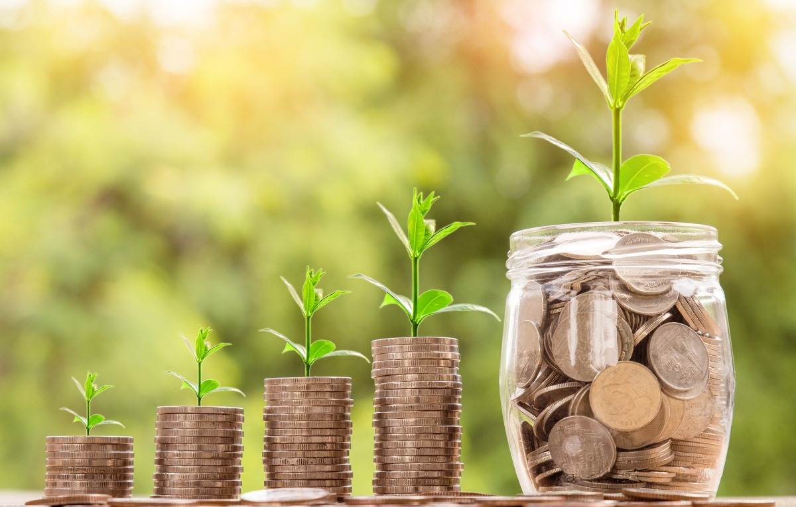
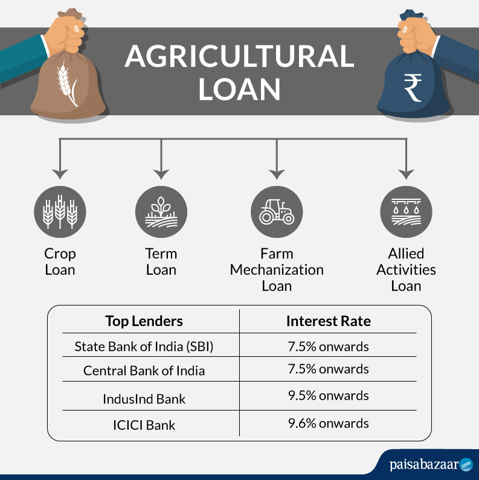
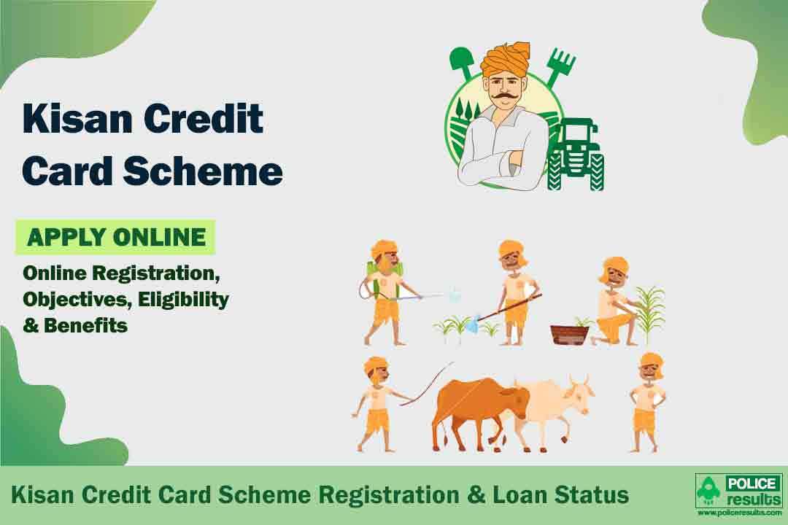

🏦 भारतातील कृषी कर्ज
शेती ही भारतीय अर्थव्यवस्थेची कणा आहे आणि देशभरातील शेतक to्यांना आर्थिक संस्था आर्थिक मदत देतात हे पाहून नक्कीच आश्चर्य वाटले पाहिजे. शेतीशी संबंधित विविध कामांसाठी कृषी कर्ज उपलब्ध आहे.

💵 भारतातील कृषी कर्जाचे प्रकार
शेतीशी संबंधित खालील उपक्रमांसाठी कोणी कर्ज घेऊ शकतो:
1. दररोज ऑपरेशन्स चालू
2. ट्रॅक्टर, हार्वेस्टर्स, इत्यादी सारख्या शेतातील यंत्रसामग्री खरेदी करणे
3. जमीन खरेदी
4. साठवण हेतू
5. उत्पादन विपणन कर्जे
6. विस्तार
शिवाय, हे आर्थिक सहाय्य अनुदान आणि अनुदानाच्या स्वरूपात देखील दिले जाऊ शकते, जे सहसा पिकांचे नुकसान किंवा पिकाचे नुकसान झाल्यास शेतक protect्याचे रक्षण करण्यासाठी असते.
भारतातील कृषी कर्ज केवळ धान्य पिकांच्या लागवडीसाठी काम करणा farmers्या शेतकर्यांनाच दिले जात नाही तर ते इतर कोणालाही उपलब्ध आहेत जे शेतीशी संबंधित इतर बागायती, मत्स्यपालन, पशुसंवर्धन, रेशीम शेती, icपिकल्चर आणि फ्लोरीकल्चरमध्ये गुंतले आहेत.
🏦 राष्ट्रीय कृषी व ग्रामीण विकास बँक (नाबार्ड)
भारतात सर्व स्तरांवर सर्व प्रमुख बँकिंग आणि वित्तीय संस्था शेतक to्यांना मोठ्या प्रमाणात आर्थिक मदत देतात. तथापि, आर्थिक पतातून ग्रामीण अर्थव्यवस्था आणि शेतीला चालना देण्याचा हा कल राष्ट्रीय कृषी व ग्रामीण विकास बँक (नाबार्ड) ने १ 1980 s० च्या उत्तरार्धात सुरू केला होता. कृषी क्षेत्रात पतपुरवठा करण्याचा विचार केला तर देशातील इतर सर्व बँका नाबार्डच्या अखत्यारीत येतात.

ही आर्थिक संस्था कृषी क्षेत्राला चालना देण्यासाठी भारत सरकारच्या संयुक्त विद्यमाने कार्यरत आहे. याचे श्रेय देशभरातील शेतक innov्यांना मोठ्या प्रमाणात मदत करणार्या अनेक नाविन्यपूर्ण योजनांचे आहे. नाबार्डने सुरू केलेली सर्वात उल्लेखनीय योजना किसान क्रेडिट कार्ड (केसीसी) आहे.
💳 किसान क्रेडिट कार्ड योजना

💳 किसान क्रेडिट कार्ड ही कृषी क्षेत्राच्या आर्थिक गरजा भागवण्याच्या उद्देशाने १ 1998 banks in मध्ये भारतीय बँकांनी सुरू केली होती. हे शेतकर्यांना आर्थिक आधार देऊन केले जाते, ज्यायोगे विविध वैशिष्ट्ये आणि फायदे मिळतात. कर्जाचे प्रमाण लागवड खर्च, शेती देखभाल खर्च, इत्यादी सारख्या अनेक घटकांवर अवलंबून असते.
💳 ज्या लोकांना बँकिंग प्रक्रियेची माहिती नाही त्यांना हे विशेषतः फायदेशीर ठरले आहे. शिवाय, हे कठोर आणि अनौपचारिक लेनदारांपासून शेतक farmers्यांचे रक्षण करण्यासाठी आहे, ज्यामुळे ते मोठ्या प्रमाणात कर्जात बुडतील.
💳 पीसी उत्पादन आणि घरगुती गरजांच्या उद्देशाने शेतकरी पैसे काढण्यासाठी केसीसी कार्ड वापरू शकतात.
💳 किसान क्रेडिट कार्डसाठी अर्ज करणे ही एक सोपी आणि त्रास-मुक्त प्रक्रिया आहे ज्यासाठी कमीतकमी कागदपत्रे आवश्यक आहेत. हे पीक विमा संरक्षण व व्याज देयकावरील अनुदानासह देखील देते. व्याज बोलायचे झाल्यास, केसीसी योजनेंतर्गत कर्जासाठी अर्ज करणारे शेतकरी वर्षाकाठी b टक्के दराने कर्ज घेऊ शकतात, ते रू. 3 लाख.
💳 किसान क्रेडिट कार्ड हे शेतक’s्यांच्या बचत खात्याशी जोडलेले आहे आणि सर्व व्यवहार एकाच खात्यात केले जातात. याव्यतिरिक्त, केसीसी खात्यातील कोणतेही क्रेडिट शिल्लक व्याज मिळवते. सर्व शेतकरी केसीसीसाठी अर्ज करू शकतात आणि आपण एखाद्यासाठी अर्ज करण्याचा विचार करत असाल तर अधिक माहितीसाठी आपल्या जवळच्या बँकेला भेट द्या.
👉 किसन क्रेडिट कार्डसाठी अर्ज करण्यासाठी येथे क्लिक करा
💰 इतर प्रकारच्या कृषी कर्ज योजनांचे प्रकार
नाबार्डने विशिष्ट क्षेत्रांना लक्ष्यित करून इतरही काही योजना विकसित करण्यात मोठ्या प्रमाणात मदत केली आहे. त्यापैकी काही खाली सूचीबद्ध आहेत:
🎯 दुग्ध व्यवसाय विकास योजना:
ही योजना डेअरी क्षेत्राला प्रोत्साहन देण्यासाठी आहे, विशेषत: आधुनिक पद्धतीने दुग्धशाळेची उभारणी करणे, वासराचे संगोपन करणे, पायाभूत सुविधा पुरविणे, व्यावसायिक प्रमाणात उत्पादन सुधारण्यासाठी लॉजिस्टिक ऑपरेशन्स सुधारणे आणि स्वयंरोजगार निर्माण करणे.
👉 अधिक माहिती मिळविण्यासाठी येथे क्लिक करा ...
🎯 ग्रामीण गोदामे:
या योजनेचे मुख्य उद्दीष्ट म्हणजे देशभरातील शेतक them्यांना गोदाम उपलब्ध करून देऊन त्यांना मदत करणे. यामुळे त्यांच्या धारण क्षमतेत कमालीची सुधारणा होईल आणि परिणामी ते संकटात अडकण्याऐवजी त्यांची विक्री योग्य दराने विकू शकतील. या व्यतिरिक्त, जागोजागी राष्ट्रीयकृत कोठार व्यवस्था निर्माण झाल्याने शेतीच्या उत्पादनांचे विपणन सोपे होते.
👉 अधिक माहिती मिळविण्यासाठी येथे क्लिक करा ...
🎯 गोदाम पावतींसाठी कर्जः
वेअरहाऊस रसीद वित्तपुरवठा त्रास विक्री टाळण्यासाठी एक मूर्ख मार्ग म्हणून करते. जेव्हा एखाद्या शेतक funds्याला कापणीनंतर निधीची आवश्यकता असते, तेव्हा त्याने आपले उत्पादन गोदाम विकास आणि नियामक प्राधिकरणात (डब्ल्यूडीआरए) मान्यताप्राप्त गोदामात साठवून ठेवले होते आणि यामुळे त्याला पावती दिली जाते. या गोदाम पावतीमध्ये उत्पादनाची गुणवत्ता आणि प्रमाण यासारख्या महत्वाच्या तपशीलांचा उल्लेख आहे, आणि संपार्श्विक मूल्याच्या 70 टक्के पर्यंत बँकांकडून क्रेडिट मिळविण्यासाठी वापरले जाऊ शकते.
👉 अधिक माहिती मिळविण्यासाठी येथे क्लिक करा ...
🎯 सौर योजना:
सौर उपकरणांच्या वापरास प्रोत्साहन देऊन ग्रीड उर्जावरील अवलंबन कमी करण्यासाठी या योजना राबविल्या गेल्या. डिझेल पंप सौर सोबत बदलण्याची त्यांची कल्पना येथे आहे, त्या तुलनेत कमी खर्चिक आहेत आणि पर्यावरणास अनुकूल आहेत.
👉 अधिक माहिती मिळविण्यासाठी येथे क्लिक करा ...
या योजनांच्या अधिक तपशीलांसह नाबार्डच्या अधिकृत संकेतस्थळाला भेट देता येईल तसेच त्या कशा अर्ज करायच्या या माहितीसह. यापैकी अनेक अनुदान आधारित योजना आहेत, आपली बँक नाबार्डने जाहीर केलेल्या निधीतून तुम्हाला पात्र असलेल्या अनुदानाच्या तुलनेत तुमची कर्ज परतफेड समायोजित करेल.
🏦 भारतातील कृषी कर्जे देणार्या अग्रगण्य बँका
भारतातील सार्वजनिक क्षेत्रातील बँकांकडे जाताना बरीच आघाडीच्या वित्तीय संस्था आहेत ज्यांना कृषीशी संबंधित क्षेत्रातील अपवादात्मक पत सेवेसाठी ओळखले जाते. यापैकी काही बँकांचा खाली उल्लेख आहे.
📌 भारतीय स्टेट बँक कृषी कर्ज
स्टेट बँक ऑफ इंडिया कृषी क्षेत्रातील अर्थसहाय्य प्रकल्पांमध्ये अग्रेसर आहे. त्यांनी त्यांच्या 16,000 अधिक शाखांद्वारे देशातील कोट्यवधी शेतक farmer्यांना मदत केली आहे. ते किसान क्रेडिट कार्ड, पीक उत्पादनासाठी सोन्याचे कर्ज आणि शेतीविषयक कामांसाठी बहुउद्देशीय सोन्याचे कर्ज यासारख्या विविध उत्पादनांची ऑफर देतात.
शेतातील यांत्रिकीकरणासाठी एसबीआय कृषी कर्जदेखील देते. या कर्जातून मिळणारा निधी एकत्रित कापणी, ट्रॅक्टर खरेदी आणि ठिबक सिंचन स्थापित करण्यासाठी वापरला जाऊ शकतो. शिवाय दुग्धशाळे, कुक्कुटपालना किंवा मत्स्यपालनासंबंधीच्या कर्जाचा लाभदेखील घेता येतो. कोठार पावतीवर क्रेडिट घेता येते.
बँक डेट स्वॅपिंग योजना देखील देते, ज्यामध्ये कर्जदार शार्क, मनी सावकार, इत्यादी सारख्या संस्थात्मक सावकारांकडून कर्ज घेऊन त्यांच्या पैशाची थकबाकी उधळण्यासाठी शेतक aid्यांना आर्थिक मदत दिली जाते. या योजनेचे मुख्य उद्दीष्ट म्हणजे शेतक debt्यांना कर्जमुक्त होण्यास मदत करणे आणि अत्याचारी व्याजदरासह त्यांचे कर्ज साफ करणे.
शेवटी, एसबीआयकडे त्यांचे शेती विपणन, कृषी व्यवसाय व कृषी क्लिनिक केंद्रे किंवा जमीन खरेदी करण्याच्या उद्देशाने आर्थिक मदतीची अपेक्षा आहे.
स्टेट बँक ऑफ इंडिया ही कर्ज आणि सेवा त्यांच्या मूळ शाखांद्वारे तसेच त्यांच्या सात सहयोगी सहाय्यक कंपन्या - स्टेट बँक ऑफ बीकानेर आणि जयपुर, स्टेट बँक ऑफ हैदराबाद, स्टेट बँक ऑफ म्हैसूर, स्टेट बँक ऑफ पटियाला, स्टेट बँक ऑफ त्रावणकोर, राज्य बँक ऑफ इंदौर आणि स्टेट बँक ऑफ सौराष्ट्र.
जर आपण स्टेट बँक ऑफ इंडियाने देऊ केलेल्या या कोणत्याही कृषी कर्जाचा लाभ घेऊ इच्छित असाल तर आपल्याला अधिक माहिती आणि अर्जासाठी आपल्या जवळच्या एसबीआय शाखेत भेट द्यावी लागेल.
👉 कर्जासाठी अर्ज करण्यासाठी येथे क्लिक करा
📌 एचडीएफसी बँक कृषी कर्ज
एचडीएफसी बँक शेतकरी आणि शेतकर्यांना विविध प्रकारचे कृषी कर्ज देते. या कर्जाचे उद्दीष्ट एका व्यापक स्पेक्ट्रमवर आहे, फळबागांची लागवड करणे आणि वृक्षारोपण करणेपासून व्यावसायिक फळबागांना प्रोत्साहन देणे आणि शेतातील पिकांचे उत्पादन यापासून सुरुवात करणे. शिवाय, एचडीएफसी बँक सर्व शेतकरी आणि लहान व्यापा .्यांना गोदाम पावती वित्तपुरवठा करते.
👉 कर्जासाठी अर्ज करण्यासाठी येथे क्लिक करा
📌 अलाहाबाद बँक कृषी कर्ज
अलाहाबाद बँक ही भारतातील आणखी एक राष्ट्रीयकृत बँक आहे जी आपल्या अक्षय कृषी योजनेंतर्गत किसान क्रेडिट कार्ड देते. या योजनेची वैशिष्ट्ये केसीसी योजनेप्रमाणेच आहेत. सर्व शेतकरी, भाडेकरी शेतकरी आणि शेती मालक, वगैरे.
खरं तर, किसान क्रेडिट कार्डची स्वतःची आवृत्ती घेऊन अलाहाबाद बँक जास्तीत जास्त मैल पार करत आहे. हा एक अलाहाबाद बँक बटाटा उत्पादक क्रेडिट कार्ड योजना म्हणून ओळखला जातो आणि शेतक main्यांना त्यांच्या लागवडीची आवश्यकता पूर्ण करण्यासाठी मदत करण्यासाठी वेळेवर योग्य प्रमाणात आर्थिक सहाय्य करणे हे त्याचे मुख्य उद्दीष्ट आहे.
स्टेट बँक ऑफ इंडिया प्रमाणेच अलाहाबाद बँक गोदाम पावती वित्तपुरवठा, कर्ज अदलाबदल योजना, ग्रामीण गोदाम बांधकाम, इत्यादी सारख्या इतर सेवा पुरवते.
👉 कर्जासाठी अर्ज करण्यासाठी येथे क्लिक करा
📌 बँक ऑफ बडोदा कृषी कर्ज
बँक ऑफ बडोदा हे कृषी उद्देशाने कर्जे मिळवण्याचा विचार करण्यामागे आणखी एक अग्रगण्य नाव आहे. त्यांच्याकडे कृषी क्षेत्रातील बहुतेक सर्व क्षेत्रांचा समावेश असलेल्या विविध योजना आहेत.
उदाहरणार्थ, एखादी व्यक्ती दररोजच्या कामकाजासाठी आवश्यक ट्रॅक्टर आणि अवजड यंत्रसामग्री खरेदी करण्यासाठी कर्ज घेऊ शकते. शिवाय, बँक ऑफ बडोदा एकतर युनिट स्थापित करण्यासाठी, किंवा दुग्धशाळे, डुक्कर शेतात, कुक्कुटपालन, रेशीम पालन, मेंढी व बकरी पालन, आणि इतर पक्षांसाठी लागणारी युनिट्स चालविण्यासाठी आवश्यक भांडवल आणि निधीदेखील ऑफर करते.
जर त्यांना चार चाकी वाहनाची गरज असेल तर ते त्यांच्या शेतीतील कामकाजाचे अधिक चांगल्या प्रकारे व्यवस्थापन करण्यासाठी बँकेकडे पाहू शकतात. बँक ऑफ बडोदा जास्तीत जास्त रु. 15 लाख.
👉 कर्जासाठी अर्ज करण्यासाठी येथे क्लिक करा
📌 पंजाब नॅशनल बँक कृषी कर्ज
पंजाब नॅशनल बँकेकडे शेतीशी संबंधित असंख्य आर्थिक उत्पादने आहेत. उदाहरणार्थ, पीएनबीकडून बायोगॅस युनिट स्थापन करणे, पडीक जमीन विकसीत करणे, लघु सिंचन उपकरणे, इत्यादी. या व्यतिरिक्त, ज्यांना मधमाश्या पाळण्याचे क्षेत्र (मधमाश्या पाळण्याचे क्षेत्र) पाठपुरावा करण्यास आवड आहे असे लोक पंजाब नॅशनल बँकेकडे आर्थिक मदतीसाठी संपर्क साधू शकतात.
नैसर्गिक आपत्ती, रोग आणि कीटकांमुळे पीक अपयशी ठरल्यास शेतक insurance्यांना विमा संरक्षण व आर्थिक मदतीसह बँक गोदाम पावती वित्तपुरवठा देखील करते. ही योजना पंतप्रधान फसल विमा योजना म्हणून ओळखली जाते. हे सर्व किसान क्रेडिट कार्ड, कर्ज स्वॅपिंग, इत्यादी सारख्या शेतक to्यांना देण्यात येणा financial्या नियमित आर्थिक सेवांच्या व्यतिरिक्त आहे.
👉 कर्जासाठी अर्ज करण्यासाठी येथे क्लिक करा
📌 आयसीआयसीआय बँक कृषी कर्ज
आयसीआयसीआय बँक विविध प्रकारचे कृषी कर्ज देते. त्यांचे सर्वात मोठे विक्री उत्पादन किसान क्रेडिट कार्ड आहे, जे त्यांच्या दैनंदिन गरजा पूर्ण करण्यासाठी सोयीस्कर मार्ग आहे. ते उपकरणे किंवा गुरेढोरे खरेदी करण्यासाठी दीर्घकालीन कर्ज देखील देतात, जे 3-4-. वर्षांच्या कालावधीत परतफेड करता येते.
आयसीआयसीआय बँक कृषीशी संबंधित प्रकल्पांच्या आर्थिक गरजा भागविण्यासाठी त्वरित सोन्याचे कर्जदेखील ऑफर करते. या व्यतिरिक्त ते मुदत ठेवींवर ओव्हरड्राफ्टची सुविधादेखील देतात, त्यांना किसान कल्पवृक्ष असेही म्हणतात. आयसीआयसीआय बँकेने देऊ केलेल्या या कृषी कर्जाच्या अधिक माहितीसाठी अधिकृत वेबसाइट पहा.
👉 कर्जासाठी अर्ज करण्यासाठी येथे क्लिक करा
📌 अॅक्सिस बँक कृषी कर्ज
अॅक्सिस बँकेने कृषी वित्त जगात एक भव्य नावलौकिक मिळवून दिला आहे. वर्षानुवर्षे त्यांनी सोन्याचे कर्ज, किसान क्रेडिट कार्ड, ट्रॅक्टर कर्ज, गोदाम पावती वित्तपुरवठा, ग्रामीण गोदामे विकसीत करण्यासाठी कर्ज आणि इतर बरीच विविध वित्तीय उत्पादनांद्वारे शेतक farmers्यांना मोठ्या प्रमाणात मदत केली.
अॅक्सिस बँक कॉन्ट्रॅक्ट फार्मिंग म्हणून ओळखले जाणारे उत्पादन देखील देते, ज्यात शेतकरी आणि कॉर्पोरेट्स यांच्यात कर्जाचे करार केले जातात. ही रक्कम सावकाराने उत्पादन आणि उत्पादनासाठी त्वरित प्रदान केली आहे आणि हे सर्व फेअर प्रॅक्टिस लोनिंग कोडद्वारे नियंत्रित केले जाते.
👉 कर्जासाठी अर्ज करण्यासाठी येथे क्लिक करा
📌 कोणत्याही प्रकारचे कर्ज घेण्यापूर्वी आपण काळजीपूर्वक संशोधन केले पाहिजे आणि कर्जाचे प्रकार आपल्यासाठी सर्वात चांगले कार्य करतात हे शोधून काढण्याची शिफारस केली जाते. मोठ्या प्रमाणात कृषी कर्जे दिली जात असल्याने, आपल्या हेतूला अनुकूल असलेले एक शोधणे अत्यंत कठीण आहे.
📌 शेतकर्यांसाठी वेगवेगळ्या सरकारी योजना
👉 शेतक for्यांसाठी सरकारी योजना
👉 पंतप्रधान किसान सन्मान निधी योजना
👉 महाराष्ट्र इंटरेस्ट फ्री फार्म लोन
👉 अल्पभूधारक शेतकर्यांकडून जमीन खरेदीसाठी शेतकan्यांना वित्तपुरवठा करण्याची योजना
📞 संपर्क साधा
वैशिष्ट्यीकृत पोस्ट

कृषी सुविधांमध्ये संपूर्ण होल्डिंगपासून ते आस्थापनांपर्यंतच्या सुविधांचा समावेश आहे.

खरंच, शतकानुशतकाच्या सर्वात मोठ्या शेतीच्या विस्ताराच्या शेवटी, शेतक of्याची कोंडी ही एक मोठी समस्या बनली होती.

शेतात, आयओटी शेतातील डिव्हाइसवर सर्व प्रकारचे डेटा दूरस्थपणे मोजण्याची आणि वास्तविक वेळेत ही माहिती शेतक to्यास पुरविण्याची परवानगी देते.

शेती हा भारताच्या अर्थव्यवस्थेचा उल्लेखनीय भाग आहे, कारण त्यामध्ये संपूर्ण जीडीपीच्या 18 टक्के वाढ होते.

आपल्याला जे करायला आवडते ते करा आणि आपल्याला स्मित करा.